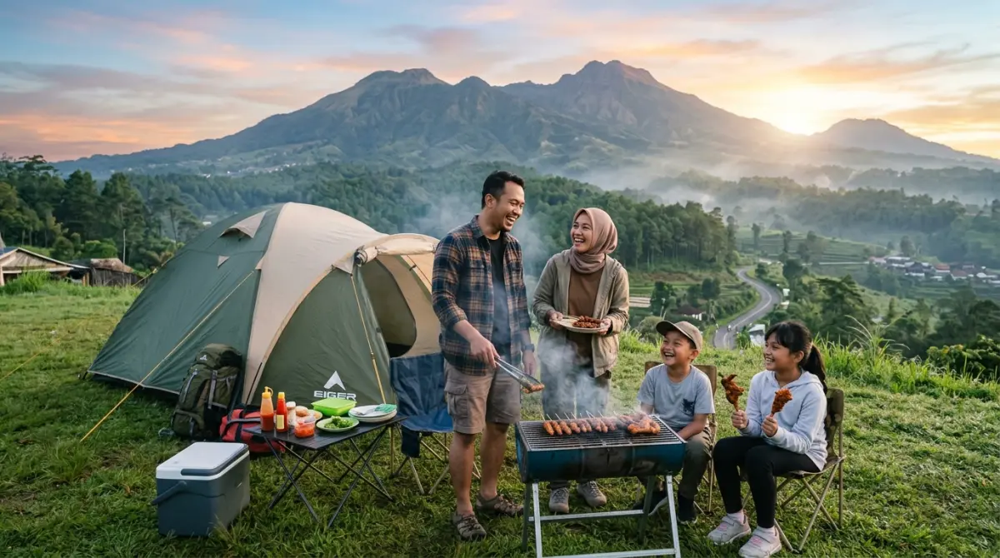
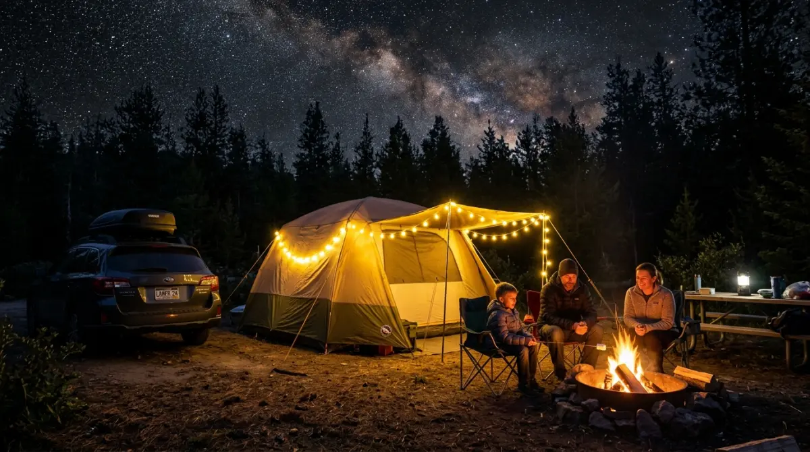

Batu dan Malang — destinasi berkemah sempurna bagi warga Surabaya yang ingin refreshing di alam.Pernah nggak sih kamu merasa hari-harimu di Surabaya cuma habis untuk rutinitas yang itu-itu saja? Pagi meeting, siang macet-macetan di Jalan Ahmad Yani atau MERR di bawah terik matahari, dan malam kelelahan mengejar deadline pekerjaan.
Tahu-tahu, kalender sudah berganti bulan, dan kamu sadar belum sempat benar-benar 'bernapas'. Rasanya sayang banget kalau masa mudamu atau momen emas pertumbuhan anak-anak cuma dilewatkan di dalam mal ber-AC atau terjebak di depan layar laptop.
Jangan sampai di kemudian hari, kamu menyesal karena terlalu sibuk bekerja sampai lupa menciptakan kenangan manis bersama keluarga saat fisik masih prima dan energi masih penuh. Pasti kamu sempat terpikir untuk mencari tempat camping di Surabaya agar bisa refreshing sejenak di akhir pekan. Namun, realitanya berkemah di tengah suhu pesisir yang panas mungkin kurang ideal untuk melepas penat dan mencari ketenangan.
Sesekali, kamu butuh pelarian nyata ke ekosistem yang berbeda. Yuk, lupakan sejenak panasnya kota dan melipir sedikit ke dataran tinggi yang udaranya sejuk. Jarak tempuhnya kini cuma hitungan jam lewat tol Trans Jawa!
Realita Mencari Area Berkemah di Tengah Kota Pahlawan
Mari kita bicara fakta. Surabaya adalah kota metropolitan yang luar biasa untuk berkarir dan berbisnis. Namun, secara geografis, kota ini berada di pesisir dengan elevasi rendah. Kalaupun ada area terbuka hijau, suhunya di malam hari sering kali masih membuat punggung berkeringat.
Mengajak keluarga, terutama anak kecil, untuk tidur di dalam tenda dengan suhu kota yang gerah ibarat memaksakan sistem kerja manual di era digital—bisa saja dilakukan, tapi tidak efisien dan rentan memicu bad mood. Mencari pengalaman berkemah yang otentik, di mana kamu bisa memakai jaket tebal dan mencium aroma embun pagi, membutuhkan sedikit pergeseran lokasi.
Solusi paling cerdas bagi warga Surabaya adalah mengarahkan setir ke selatan, menuju kawasan dataran tinggi Malang dan Batu. Lewat tol Trans Jawa (Tol Surabaya - Gempol - Malang), perjalanan yang dulunya melelahkan kini bisa ditempuh hanya dalam waktu 1,5 hingga 2 jam. Sangat praktis, bukan?
Kenapa Harus Melipir ke Dataran Tinggi Batu dan Malang?
Beranjak sedikit dari wilayah Surabaya memberikan kontras yang sangat menyegarkan bagi fisik dan mentalmu. Perubahan suasana ini sangat penting untuk me-reset kepenatan otak.
Udara Dingin yang Menyembuhkan
Di kantor, kamu mungkin terbiasa dengan dinginnya AC sentral yang kering. Di pegunungan, dingin yang menyapamu adalah udara segar yang kaya oksigen. Suhu malam hari di area Batu bisa turun hingga belasan derajat Celcius. Tidur di dalam tenda dengan balutan sleeping bag atau selimut tebal akan memberikan kualitas tidur (deep sleep) yang mungkin sudah lama tidak kamu rasakan di tengah bisingnya klakson kendaraan di kota.
Momen BBQ Tanpa Takut Keringatan
Makan daging panggang di restoran All You Can Eat di mal Surabaya memang enak. Tapi, pengalaman memanggang irisan daging sapi sendiri di atas arang yang menyala di tengah malam yang dingin? Itu level kenikmatan yang berbeda. Tidak ada asap kendaraan, yang ada hanya wangi bumbu BBQ yang berpadu dengan aroma pinus. Momen mengelilingi alat panggang ini sering kali menjadi waktu terbaik untuk deep talk dengan pasangan atau tertawa lepas bersama anak-anak tanpa ada yang sibuk menunduk melihat layar smartphone.
Rekomendasi Spot Berkemah Dekat Surabaya dengan View Terbaik
Jika kamu sudah siap memasukkan koper ke dalam bagasi, berikut adalah kurasi spot berkemah di kawasan dataran tinggi (Batu dan Malang) yang sangat mudah diakses oleh warga Surabaya.

Kawasan Batu dan Malang — surga berkemah bagi warga Surabaya yang haus udara segar pegunungan.1. Batu Sunrise Camp: Paket Lengkap Kemewahan Alam
Kalau tujuan utamamu adalah memburu matahari terbit yang spektakuler tanpa harus trekking berat, Batu Sunrise Camp adalah destinasi wajib yang harus masuk daftar teratasmu. Tempat ini ibarat jawaban atas doa para pekerja kantoran yang ingin praktis namun tetap mendapatkan pengalaman alam yang maksimal.
Sesuai namanya, posisi lahan berkemah ini diatur sedemikian rupa sehingga menghadap langsung ke arah timur. Kamu cukup membuka ritsleting tenda di pagi hari, dan semburat cahaya keemasan sunrise berlatar pegunungan sudah menyapamu tepat di depan mata.
Tempat ini juga dikonsep dengan sangat kids-friendly. Area rumputnya luas dan rata, aman untuk anak-anak berlarian. Menariknya, Batu Sunrise Camp juga terintegrasi dengan berbagai layanan outbound. Jadi, selain bersantai menikmati sesi BBQ di malam hari, keesokan paginya kamu bisa langsung mengikuti aktivitas games luar ruangan yang seru.
2. Bumi Perkemahan Bedengan, Malang: Syahdunya Tepian Sungai
Jika kamu mencari suasana yang lebih raw dan identik dengan suara gemericik air, Bedengan adalah pilihan klasik yang tak pernah salah. Area berkemah ini berada di tengah rimbunnya hutan pinus dengan sungai berair jernih dan dangkal yang membelah kawasan tersebut.
Menginap di sini ibarat mematikan notifikasi grup WhatsApp kantor seharian. Suara aliran sungai benar-benar menjadi white noise alami yang menenangkan pikiran. Anak-anak pasti akan sangat gembira bermain air atau mencari batu beraneka warna di pinggir sungai saat siang hari. Fasilitas MCK dan musala di sini sudah dikelola dengan sangat baik.
3. Camping Ground Gunung Banyak (Paralayang): Gemerlap Bintang di Darat
Untuk kamu yang lebih suka pemandangan city lights atau kerlap-kerlip lampu kota dari ketinggian, area Gunung Banyak di Kota Batu adalah spot yang brilian. Di siang hari, area ini adalah landasan pacu bagi olahraga paralayang. Di malam hari, kamu bisa mendirikan tenda dan menyaksikan Kota Batu dari atas yang terlihat seperti lautan bintang.
Angin di sini cukup kencang, jadi pastikan kamu membawa jaket windbreaker dan mendirikan tenda dengan pasak yang kuat. Keseruannya adalah, pagi harinya kamu bisa langsung melihat aksi para atlet atau wisatawan yang terbang membelah kabut menggunakan paralayang.
4. Area Coban Rondo: Ikon Wisata yang Tak Pernah Mati
Bagi pemula yang baru pertama kali ingin mengajak keluarga berkemah, area Wana Wisata Coban Rondo selalu menjadi rekomendasi yang paling aman. Area perkemahannya sangat luas, landai, dan dikelilingi pohon pinus yang rapat.
Karena berada di kawasan wisata terpadu, fasilitasnya sangat lengkap. Kamu bahkan tidak perlu pusing memikirkan makanan karena banyak warung yang buka hingga malam hari. Paginya, kamu bisa berjalan kaki santai menuju air terjun Coban Rondo atau mengajak anak-anak bermain di labirin tanaman yang ikonik. Ini adalah liburan minim risiko dengan tingkat kepuasan tinggi.
Tips Singkat Persiapan Berkemah Bawa Keluarga
Agar ekspektasi pelarianmu dari Surabaya berjalan semulus rencana kerja tahunan, perhatikan beberapa hal krusial berikut:
Checklist Persiapan Berkemah dari Surabaya
- Insulasi adalah Kunci: Udara gunung sangat berbeda dengan AC di rumah. Pastikan kamu membawa matras tidur yang tebal agar dingin dari tanah tidak langsung mengenai punggung. Bawa jaket berbahan fleece atau parasut, serta kaus kaki tebal.
- Siapkan Logistik Instan: Selain daging BBQ, bawa makanan yang mudah diseduh seperti mi instan cup, sereal, atau minuman cokelat panas. Saat suhu mendadak turun, makanan hangat instan ini akan menjadi pahlawan bagi anak-anak yang rewel karena lapar.
- Datang Lebih Awal: Usahakan berangkat dari Surabaya pagi hari dan sampai di lokasi sebelum jam 2 siang. Mendirikan tenda dan menata barang saat hari masih terang jauh lebih santai daripada terburu-buru berpacu dengan gelap dan kabut sore.
Kesimpulan: Ciptakan Ruang untuk Bernapas
Pada akhirnya, mengejar karir dan mengumpulkan materi di kota sebesar Surabaya memang penting untuk jaminan masa depan. Namun, merawat kewarasan dan ikatan emosional dengan keluarga di masa kini tak kalah pentingnya. Bayangkan lima tahun dari sekarang, memori apa yang ingin kamu ingat? Tumpukan laporan di atas meja kerjamu, atau lucunya ekspresi anakmu saat melihat kabut turun pertama kali di depan tenda?
Jangan menunggu sampai tubuhmu benar-benar kelelahan. Waktu luang itu tidak akan pernah datang kalau tidak kamu jadwalkan dengan paksa. Ambil kalendermu sekarang, ajukan cuti akhir pekan, siapkan kendaraanmu, dan rasakan magisnya bertukar udara panas kota dengan embun pagi pegunungan. Rencana pelarianmu sudah di depan mata, saatnya wujudkan liburan alam impianmu!
FAQ — Camping Dekat Surabaya